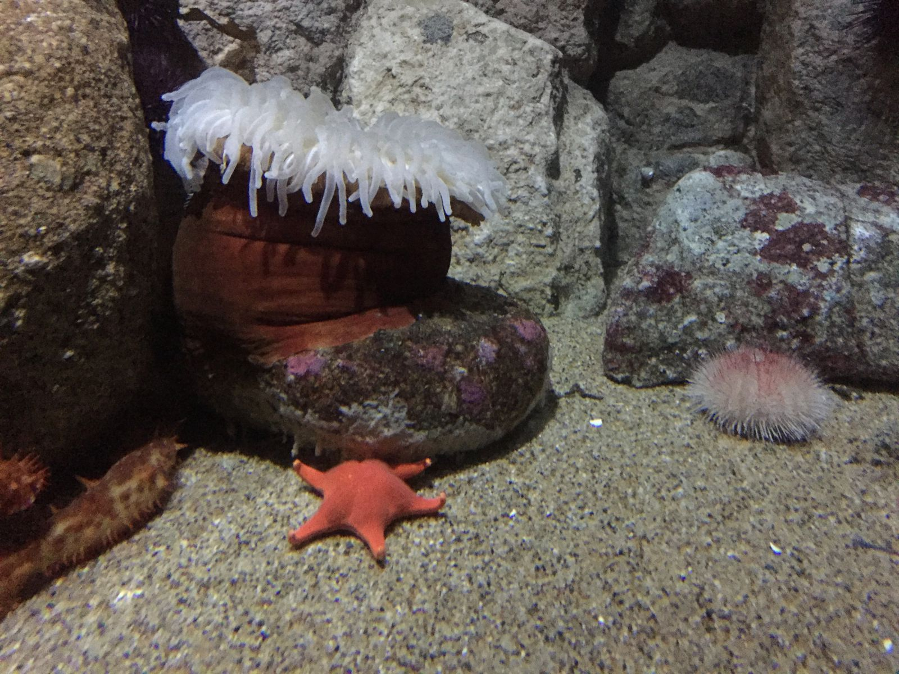
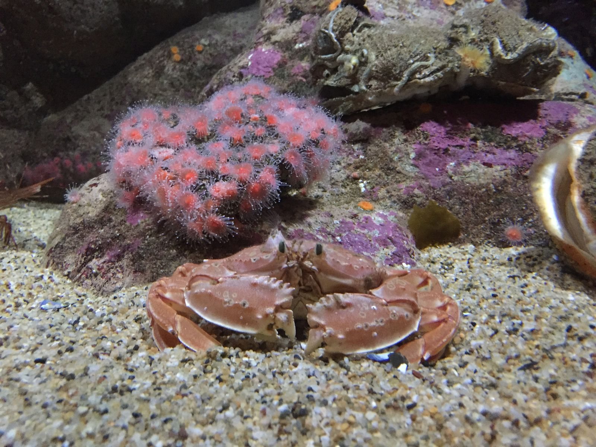
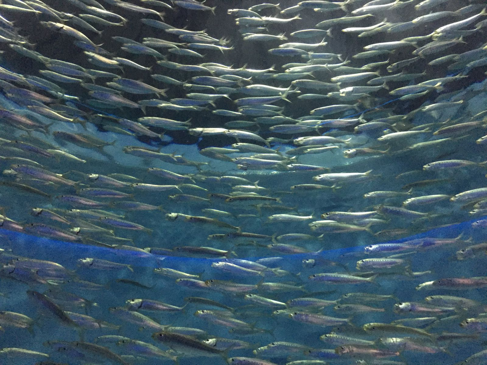
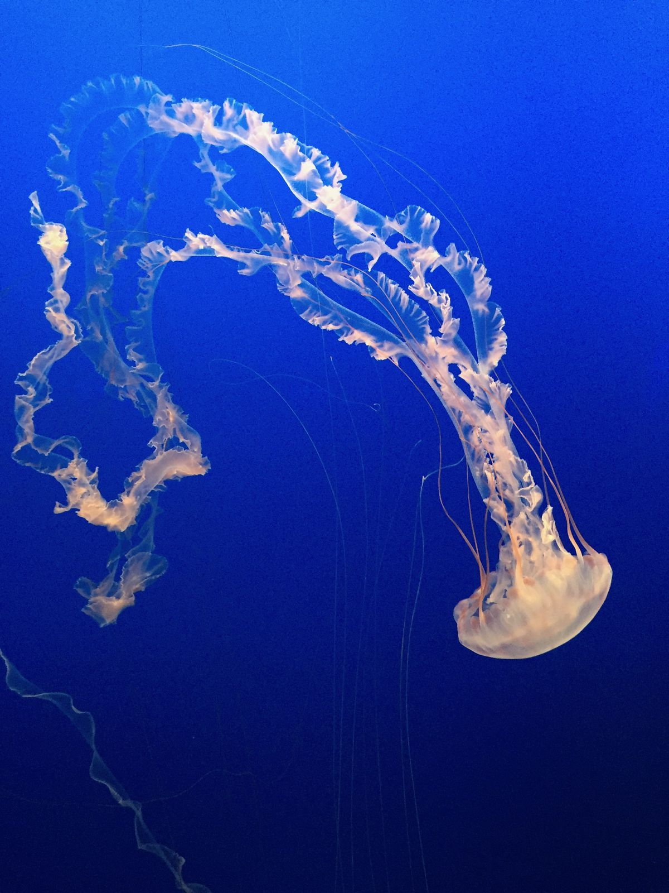
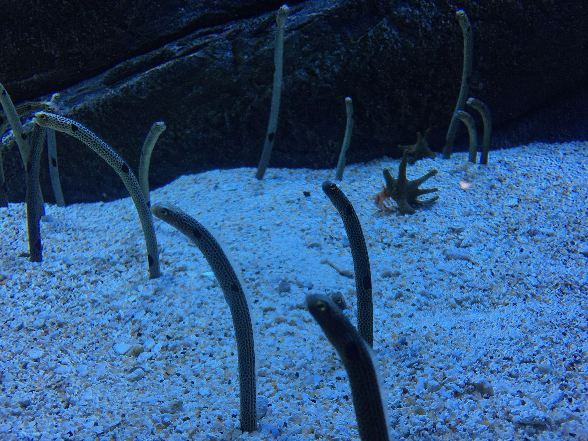
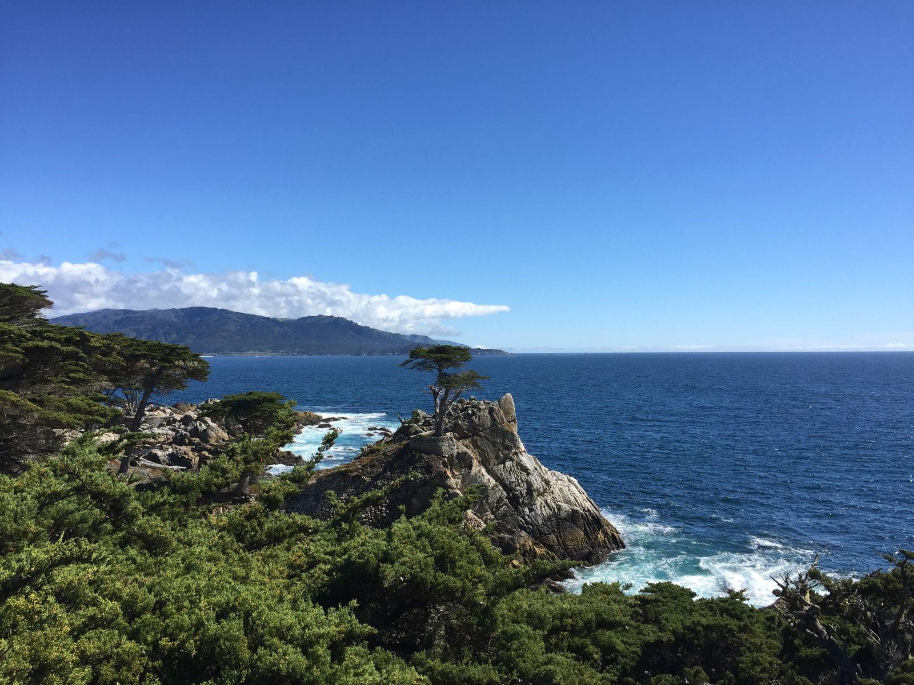
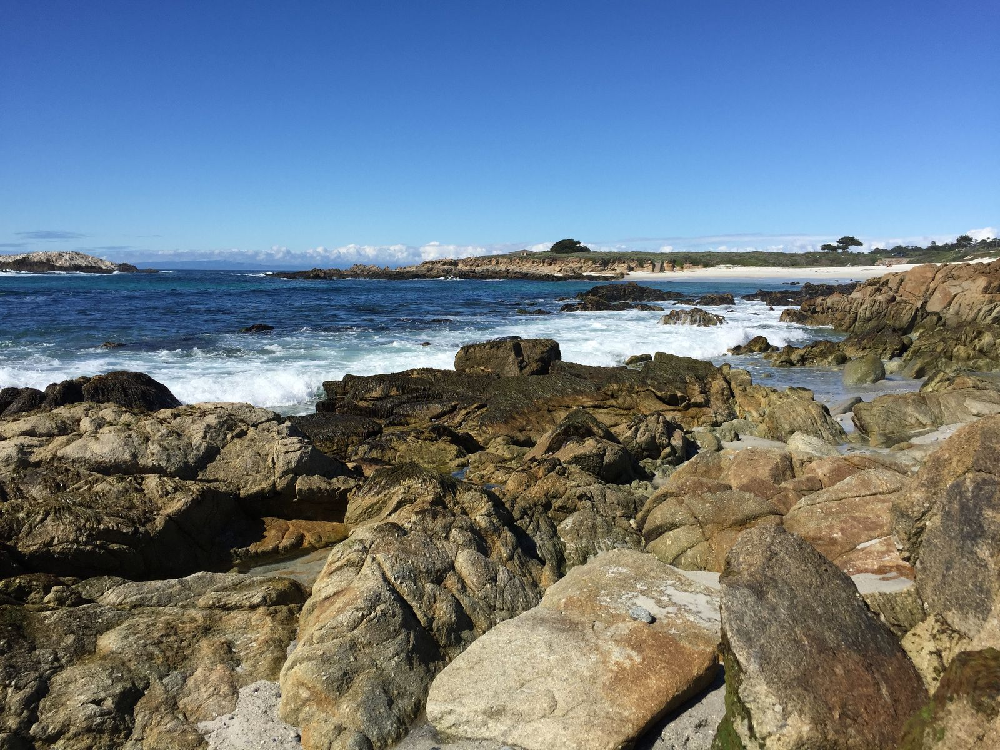
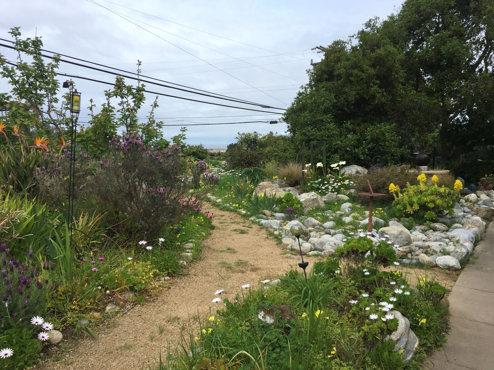
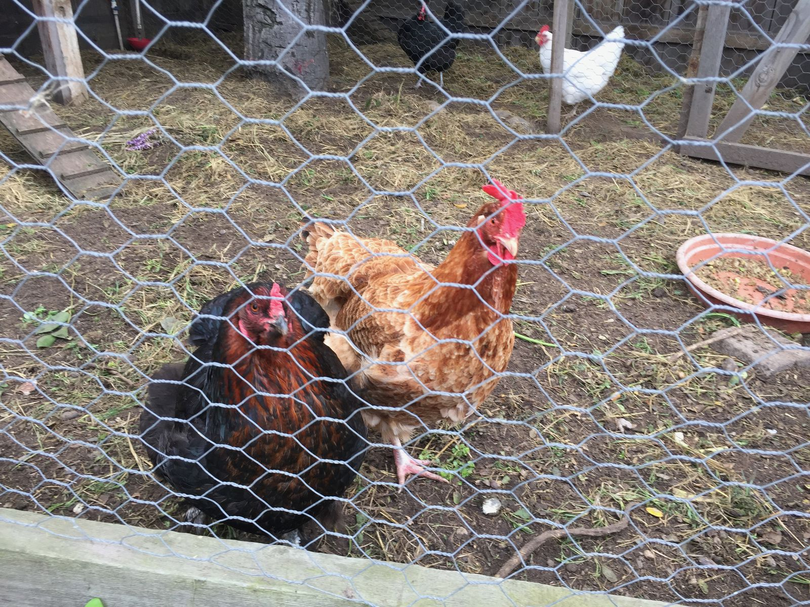
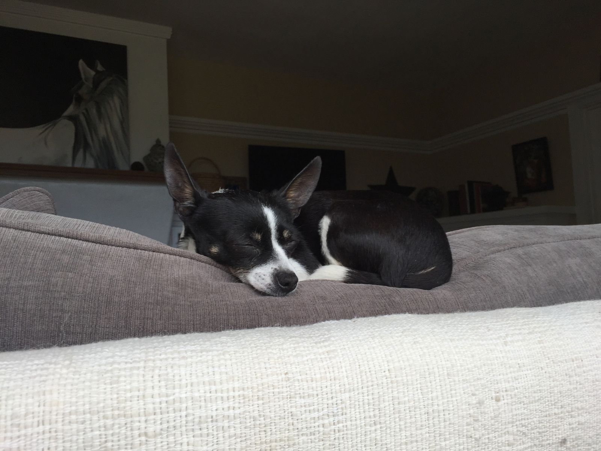

Monterey
I'm back on the grid again. I spent the night at the Historic Landmark House in Seaside, just east of Monterey.
The day started off cold and rainy so I went first to the Monterey Aquarium to visit the cast of Spongebob.





After I left the aquarium, the rain stopped and the sun emerged from the clouds. I had a quick lunch at Happy Girl Kitchen, a great healthy vegetarian place a few blocks from the aquarium. I rented an electric bike and rode the 17 Mile Drive. It's basically this scenic route through the beaches, expensive houses, and golf courses. If you take a car, you have to pay to get on the road. I'd never used an electric bike before, and it was a cool experience. You set a "passenger assist" level to between 0 and 6. Since the bike weighed 80 lbs, I rarely used the powerless setting. Most of the time I cruised around on 1-2, reserving 3 for steep hills.

At some point on the way back, I stopped along a beach and stared into the ocean for a bit.

After returning for the bike, I guess I wasn't tired enough, so I walked a few miles along the coast. I was craving fish and chips and some quick googling pointed me to the London Bridge Pub. It was pretty good, but not as good as the ice cream I got afterwards at Revival. I missed one day of ice cream yesterday, so I'll need to get an extra ice cream in at some point.

Before I leave for my kayak wildlife tour of Moss Landing, I will leave you with some pictures of this wonderful bed and breakfast. The place was extremely clean and well decorated with art painted by the owners. I highly recommend staying here if you're in the area. They provided a delicious breakfast and gave some good lunch suggestions.
At breakfast I got to meet some of the guests and staff. A woman and her mother-in-law were in town from Fremont for a quilting show. Charlotte, one of the staff members, has been living here for a few months now—originally from Kentucky but using this place as an artist residency. Annemarie, one of the owners, created many of the paintings hung around the house. While my 3D printed snail didn't compare, they appreciated it and left it next to their guestbook. I met the cat and dog and chickens too.


